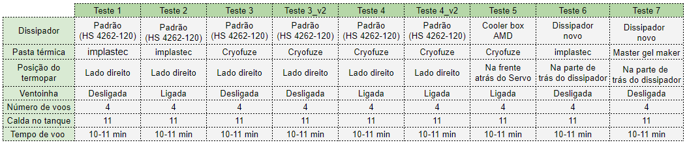

Devido ao grande número de queimas da ponte retificadora, sendo a principal causa o superaquecimento no componente. Os testes começaram a partir da mudança na pasta termica substituindo a implastec pela Cooler Master Cryofuse. E em um segundo momento vai ser testado o cooler box AMD.
Tabela com a variação dos fatores em cada teste

Observação: O teste 3 foi repetido (teste3_v2), pois o gerador estava invertendo muito a curva (47.7v a 48.2v, até os 5 minutos de voo). O teste4_v2 foi feito para se obter mais dados com a pasta térmica, cooler master + cooler(AMD).
Conclusões preliminares: O melhor cénario foi com a pasta térmica coler master (cryofuze) + cooler AMD ligado, porém esse setup implica em partes moveis(cooler) com um risco de quebra. Por esse motivo é mais interessante usar a pasta térmica da cooler master (14w/mk) a implastec (0.4w/mk) e o manter em um primeiro momento o dissipador padrão do modelo HS 4262-120. Esse dissipador tem um grande ponto negativo, pois a sua superficie fica apenas 80% em contato com a ponte retificadora, devido a um rasgo que existe nele de ponta a ponta. )
Sugestões: Repetir os teste 3 e 4 em um outro drone, após mudar o dissipador de modo que ele encoste 100% na ponte retificadora, e em outro momento é interesante testa o thermal pad Gelid GP-Ultimate com 15 W/mk, pois o seu custo é proporcionalmente menor e mais fácil de aplicar).